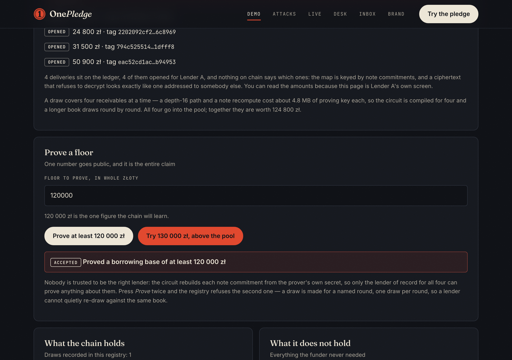
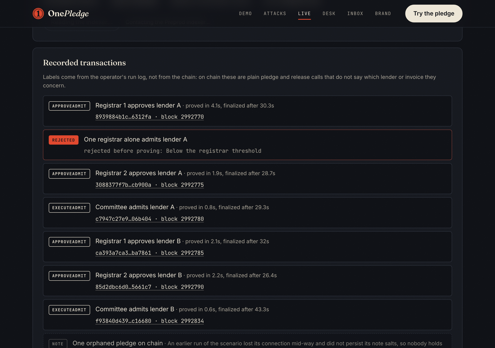

Midnight Buildathon · Wave 2 · registry v4 on Preprod
A registry on Midnight that refuses to let the same receivable be financed twice — and now lets a lender prove its book clears a floor without showing the book.
Try it: onepledge.vercel.appgithub.com/OoJae/onepledge
The problem
Catching a double pledge means pooling books. A lender's clients and pricing are its business, so nobody shares.
FV/2026/09/0412 and FV-2026-09-0412 hash differently. Each bank's spelling is a "new" invoice.
Anyone holding an invoice hashes it and learns from the public chain whether, and when, it was financed.
Why not a trusted registry · why Midnight
| Operator-run registry | Public hash registry | OnePledge on Midnight | |
|---|---|---|---|
| Who sees each lender's deals | The operator | Anyone who can hash the invoice | Nobody |
| Dodged by a spelling change | No | Yes | No: one KSeF number, keyed tag |
| Outsiders can see who financed what | No | Yes | No: tags need the authority's key |
| Rule checked by code anyone can verify | No | Yes | Yes: in-circuit, verifier keys on chain |
| Still trusted | The operator, for everything | Nothing, but it leaks | The tag authority, to tag each invoice once; the 1-of-1 upgrade key |
Midnight gives private state with public verification: attestations, secrets and lender identity stay local; only what a circuit discloses reaches the ledger.
How it works
Poland's e-invoicing system gives each invoice issued through it one 35-character number with a CRC-8. One spelling only.
The tag authority computes T = HMAC(key, number). Same invoice, same tag.
Its Jubjub key signs a digest of (domain, registry, T, invoice commitment, amount, day, expiry, borrower key).
The circuit checks the signature, window, expiry and lender membership, then adds T to a public set. Only a decline takes it back out.
Registry v4 carries nine circuits, each with a proving key and an on-chain verifier key:
approveAdmitexecuteAdmitapproveRotateexecuteRotatepledgereleaseacceptPledgedeclinePledgeproveBorrowingBase
Shipped this wave · the registrar committee
One key admitted every lender. Losing it stopped admissions; rotating it to a wrong key stopped them permanently. We published that ourselves as F68.
registrars is a HistoricMerkleTree<4, Bytes<32>> of committeeLeaf(epoch, registrarKey) leaves, a sealed threshold of 2, a proposals map from action to approval nullifiers, and an executed set. Two members must approve before a lender is admitted; a member cannot approve twice; an outsider cannot approve at all; and a rotation needs two approvals and voids every pending proposal.
A member proves its committee leaf by Merkle path, so an approval publishes the action, the root everyone already has, and a nullifier naming no member. The alternative — a Set the circuit calls member() on — was rejected: every ledger key a Compact circuit touches must be disclosed, so it would publish which registrar vouches for which lender, a log of the relationships this product promises not to keep.
All three seats are held by the deployer in this demo. The mechanism is genuinely enforced on chain; the custody is not. The anonymity set is three.
Shipped this wave · the borrowing base
A factor that finances receivables is itself financed, and its funding bank wants to see the book behind a drawdown. Showing it means handing over the client list, the invoices and the amounts — the same disclosure problem the registry exists to avoid, one level up.
Proves that four receivables pledged to this lender are together worth at least a public floor. Published: the round, the floor and an unlinkable draw id. Not published: any individual amount, which receivables are in the pool, or whose book it is. Authorisation is structural rather than checked — the circuit recomputes each note commitment from the prover's own secret, so only the lender of record for all four can produce the proof.
Shipped this wave · delivery and the lender inbox
The borrower encrypts the note opening to the lender, and the ledger holds it in deliveries: Map<Bytes<32>, Opaque<"Uint8Array">>, keyed by the note commitment.
Trial decryption, the way shielded protocols do it: a fresh ephemeral key per delivery means two deliveries to the same lender share no bytes, and nothing on chain says who any delivery is for. Publishing a per-lender index instead would let anyone holding a lender's key link that lender's whole book.
Because the ciphertext is Opaque the circuit cannot constrain it, so a borrower can post nonsense. The lender then decrypts nothing and declines — which is what the void path is for.

The attested amount is now signed by the tag authority and bound into the note commitment, and never published — a borrowing-base proof is only as honest as the amounts it sums.
Selective disclosure
| Party | Learns | Never learns |
|---|---|---|
| Financing lender | full invoice decrypted from its own delivery, checked against the signed commitment | Other lenders' deals |
| Rival lender given a tag | "already pledged" | By whom, how much, which terms |
| The lender's own funder | "this round cleared the floor" | Which receivables, their amounts, or whose book |
| Public chain | Opaque tags, note commitments, ciphertexts, roots, expiry days, draw floors, counts | invoice, amount, borrower, who financed it |
| Tag authority | Its attested invoices, and whether and when each was pledged | Which lender financed them, or the terms |
Enforced by privacy tests that check every value longer than two bytes in each circuit's public transcript against an allowlist.
Live on Midnight Preprod · registry v4
Two registrars approve each lender before it is admitted, and one acting alone is refused. A borrower pledges an attested invoice; the same invoice offered to a second lender is refused. The named lender accepts. A declined pledge frees its receivable to be financed elsewhere. The lender proves four of its receivables clear a floor, is refused when it overstates, and releases a paid pledge. Then the committee rotates itself.

npm run verify:onchain passes 19 checks against the live contract, among them that each of the nine on-chain verifier keys equals the committed contract/src/managed/registry/keys/*.verifier, and that each recorded registrar-committee seat is present in the on-chain committee tree.
Tested and self-audited
v1 signed only 248 bits of the tag, so changing its last byte passed. The fix signs one SHA-256 digest of the whole attestation, bound to the registry and an expiry. A regression test flips every byte.
Market
A registry like this sounds like it needs the whole market to join first. It does not. It works with two lenders, because the only thing either one learns is one fact about one invoice: already pledged. No critical mass, no governance body, and no participant shows its book to anyone — not to a rival, not to an operator, not to the registry.
proveBorrowingBase is useful to a single lender with no counterparty yet: it turns a drawdown request to its own funder into a proof instead of a disclosure. A factor adopts OnePledge to shorten its own funding conversation, and gets double-pledge protection as a side effect of already being there.
Of all KSeF permissions, only two can carry the canDelegate flag: InvoiceWrite and InvoiceRead. An intermediary — a podmiot pośredniczący — holding delegated InvoiceRead in a client's context may fetch that client's invoice lists. That is exactly the party this design needs: a provider or bureau that already, lawfully, reads its clients' invoices. It does not remove the single-authority assumption; it only says the role is a real one.
Beachhead: factoring on KSeF. Buyers: factors, supply-chain-finance banks, private-credit funds. A KSeF-connected provider or a lenders' association runs the tag authority; lenders pay per attestation or pledge.
Roadmap · team
Compact contract and in-circuit Schnorr, tag authority, CLI, Preprod deployment, web app, security review and threat model.